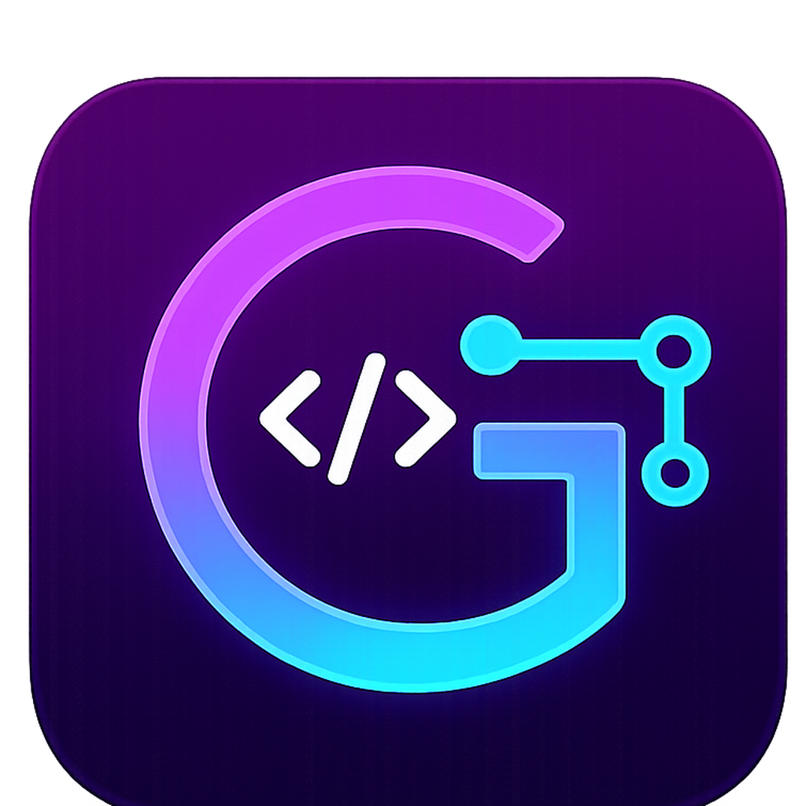

Editor-first
Inline blame, hover details, CodeLens actions, and current document refresh flows directly in the editor.

Limited beta
A Visual Studio extension for developers who need to understand how code changed, who changed it, and what related areas may be affected — without leaving the editor.

Inline blame, hover details, CodeLens actions, and current document refresh flows directly in the editor.
History Explorer, Commit Graph, Git Timeline, Project Context, and Review Inbox as dedicated tool windows.
Read-only workflows for investigation. No commit, push, checkout, reset, or branch mutation.
Visual Studio developers working on Git repositories with real branch, author, and review history. The more active the repo, the more useful the testing signal.
Beta access is handled manually. Approved testers receive a package with everything needed to get started.
Your Visual Studio version, whether you can test against a real project, and any specific workflows you want to evaluate.
A controlled beta ZIP containing the installer, reviewer guide, license key, and known issues list.
Beta installers, keys, and reviewer guides are not hosted on the public website.
Email beta@cipherchimpsoftware.com — include your Visual Studio version.